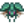
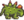
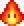

Gremio de aventureros
| Gremio de aventureros | |
 | |
 | |
| Horario de apertura: | De 14:00 a 02:00 |
| Dirección: | Al este de Las minas, al norte del Pueblo Pelícano |
| Residentes: | |
El Gremio de Aventureros se encuentra al este de Las Minas y es el hogar de Marlon y Gil. Allí el jugador puede comprar Armas, Botas, Anillos y decoraciones. Marlon también comprará armas, botas y anillos, así como Botín de monstruos al jugador.
Antes de poder acceder, debes completar la misión Iniciación. Una vez terminado, el gremio abre todos los días de 14:00 a 02:00 horas, excepto los días de festival, en los que la puerta está cerrada.
Interior
Dentro del edificio puedes encontrar a Marlon detrás del mostrador, vendiendo armas, calzado y anillos. Gil se sienta en su mecedora junto al fuego. A la izquierda de la chimenea está el tablón con el registro de monstruos matados.
Ni Marlon ni Gil aceptan regalos, ni ganan puntos de amistad. Solo se puede acceder a la trastienda del gremio después de matar 1000 monstruos. En esa habitación, hay una caja que contiene el libro Mapeando los Sistemas de Cuevas.

Erradicación de monstruos
En el tablón a la derecha de la mesa de Marlon hay una lista de los tipos de monstruos que se han asesinado. Cuando se ha matado la cantidad asignada, Gil dará al jugador una recompensa. Las recompensas obtenidas anteriormente se pueden comprar a Marlon. Si el jugador tiene el inventario lleno y no puede coger la(s) recompensa(s) de Gil, cuando cierre el inventario no podrá recuperar la recompensa de él. Si el inventario está lleno, el jugador puede seleccionar el objeto en el menú de diálogo y tirarlo al suelo. Permanecerá en el suelo mientras el jugador ordena el espacio en su inventario. De lo contrario, el jugador tendrá que comprar el objeto a Marlon.
| Tipo de monstruo | Cantidad | Recompensa | Descripción |
|---|---|---|---|
Excluye Babas Grandes y Babas en el Criadero). |
1000 | Evita el daño causado por babas. | |
| Espíritus sombríos |
150 | Ganas un pequeño aumento de velocidad cada vez que matas a un monstruo. | |
| Murciélagos |
200 | Recuperas un poco de salud cada vez que matas a un monstruo. | |
| Esqueletos |
50 | Sus ojos rojos brillan misteriosamente. | |
| Insectos de cueva Bicho |
80 | No es muy agradable de blandir. | |
| Cavadores |
30 | Mantén el coco de una sola pieza. | |
| Duendes del polvo |
500 | Es más probable que los monstruos dejen caer objetos. | |
| Cangrejos de roca |
60 | La parte de arriba del anillo está hecha con un caparazón de cangrejo encantado. | |
| Momias |
100 | El tipo de sombrero de cowboy que lleva un mago. | |
|  Pimienta Rex | 50 | ¡Parece uno de verdad! | |
| Serpientes |
250 | Cuando derrotas a un enemigo, explota. | |
| Duendes de magma Duende de magma |
150 | Número telefonico de Marlon | Puedes llamar para utilizar el Servicio de recuperación de objetos desde casa. |
Tienda
| Imagen | Nombre | Descripción | Desbloqueado | Precio de compra | Precio de venta |
|---|---|---|---|---|---|
| Espada oxidada | Una espada vieja, roma y oxidada. | ||||
| Hoja de madera | No está mal para ser madera tallada. | ||||
| Fémur | Un hueso viejo y pesado cubierto de siglos de suciedad. | Lega al piso 10 de Las Minas. | |||
| Puñal de hierro | Una daga común. | Alcanza el nivel 15 de Las minas. | |||
| Hoja élfica | Solo las diestras manos de un elfo podrían crear algo así. | Llega al piso 20 de Las minas. | |||
| Daga de cristal | La hoja está hecha de cuarzo purificado. | Llega al piso 60 de Las minas. | |||
| Espadín de acero | Una hoja estándar de metal. | Llega al piso 20 de Las minas.. | |||
| Sable de plata | Chapado en plata para evitar la oxidación. | Alcanza el nivel 20 de Las minas. | |||
| Sable pirata | Parece que en su día perteneció a un pirata. | Alcanza el nivel 30 de Las minas. | |||
| Alfanje | Una hoja elaborada con esmero. | Alcanza el nivel 25 de Las minas. | |||
| Maza de madera | Su sólida cabeza pega fuerte. Relativamente ligera para ser una porra. | Alcanza el nivel 40 de Las minas. | |||
| Claymore | Es muy pesada. | Alcanza el nivel 45 de Las minas. | |||
| Hoja del templario | Solía pertenecer a un honorable caballero. | Alcanza el nivel 55 de Las minas. | |||
| Espada ósea | Un trozo muy ligero de hueso afilado. | Alcanza el nivel 75 de Las minas. | |||
| Bracamante | Ligero y poderoso, hecho de acero. | Alcanza el nivel 90 de Las minas. | |||
| Katana de lava | Una hoja poderosa forjada en un lago de lava agitada. | Alcanza el fondo de Las minas. | |||
| Espada galaxia | Nunca has visto nada parecido. | Lleva una Esquirla prismática a los tres pilares en el Desierto de Calico. | |||
| Daga galaxia | Nunca has visto nada parecido. | Conseguida junto a la Espada galaxia | |||
| Martillo galaxia | Hecho de un material ultraligero que no has visto jamás. | Conseguido junto a la Espada galaxia | |||
| Deportivas | Un poco endebles... ¡Pero a la moda! | ||||
| Botas de cuero | Su cuero es muy flexible | Alcanza el nivel 10 de Las minas | |||
| Botas de trabajo | Con punta de acero para mayor protección. | Alcanza el nivel 10 de Las minas | |||
| Botas tundra | Su forro peludo mantiene caliente tus tobillos | Alcanza el nivel 50 de Las minas | |||
| Botas de combate | Reforzadas con cota de malla | Alcanza el nivel 40 de Las minas | |||
| Botas de faquir | Se dice que aguantan el magma más caliente | Alcanza el nivel 80 de Las minas | |||
| Botas oscuras | Hechas de grueso cuero negro | Alcanza el nivel 80 de Las minas | |||
| Botas espaciales | Su tejido de iridio les aporta un brillo lila | Alcanza el nivel 110 de Las minas | |||
| Anillo de amatista | Aumenta el retroceso en un 10% | Completa la misión Iniciación (mata 10 Babas) | |||
| Anillo de topacio | Aumenta la precisión del arma en un 10% | Completa la misión Iniciación (mata 10 Babas) | |||
| Anillo de acuamarina | Aumenta la probabilidad de golpe crítico en un 10% | Alcanza el nivel 40 de Las minas | |||
| Anillo de jade | Aumenta la potencia de los golpes críticos en un 10% | Alcanza el nivel 40 de Las minas | |||
| Anillo de esmeralda | Aumenta la velocidad del arma en un 10% | Alcanza el nivel 80 de Las minas | |||
| Anillo de rubí | Aumenta el ataque en un 10% | Alcanza el nivel 80 de Las minas | |||
| Tirachinas | Necesita Piedra como munición | Alcanza el nivel 40 de Las minas | N/A | ||
| Tirachinas maestro | Necesita Piedra como munición | Alcanza el nivel 70 de Las minas | N/A | ||
| Munición explosiva | Dispárala con un tirachinas | Desbloquea la receta de Munición explosiva | |||
| Espada de pared | Puede colocarse dentro de casa. | N/A | |||
| Espada decorativa | Puede ser construido como decoración. | N/A | |||
| Anillo encantababas | Evita el daño causado por babas | Mata 1000 Babas | |||
| Anillo del salvaje | Ganas un pequeño aumento de velocidad cada vez que matas a un monstruo | Mata 150 espíritus sombríos (Chamán de las sombras / Bestia de las sombras) | |||
| Anillo del ladrón | Es más probable que los monstruos dejen caer objetos | Mata 500 Duendes del polvo | |||
| Anillo del vampiro | Recuperas un poco de salud cada vez que matas a un monstruo | Mata 200 Murciélagos | |||
| Anillo caparazón de cangrejo | Recuperas un poco de salud cada vez que matas a un monstruo | Mata 50 Cangrejos de roca | |||
| Anillo de artillero | Cuando derrotas a un enemigo, explota | Mata 250 Serpientes | |||
 |
Máscara huesuda | Sus ojos rojos brillan misteriosamente. | Mata 50 Esqueletos | N/A | |
 |
Casco | Mantén el coco de una sola pieza. | Mata 30 Cavadores | N/A | |
 |
Sombrero arcano | El tipo de sombrero de cowboy que lleva un mago. | Mata 100 Momias | N/A | |
 |
Casco de caballero | ¡Es igual que uno de verdad! | Mata 50 Pimienta Rex | N/A | |
| Cabeza de insecto | No es muy agradable de blandir. | Mata 80 Insectos de Cueva |
Servicio de recuperación de objetos
El jugador puede perder objetos si se desmaya debido a su baja salud en Las minas, en la Mina de la Cantera, la Caverna Calavera o en la Mazmorra del volcán. En ese caso puede hablar con Marlon en el Gremio de Aventureros para utilizar el "Servicio de recuperación de objetos" que recuperará uno de los objetos perdidos a cambio de una cuota. La tarifa equivale al precio de venta del objeto o pila; es gratis recuperar un objeto no vendible. El objeto se enviará por correo al jugador de un día para otro. Sólo se puede recuperar un objeto (o una pila); el resto se pierden permanentemente después de su elección. El jugador puede hacer su elección en cualquier momento hasta el próximo colapso debido a la baja salud, que lo reseteará a los nuevos artículos perdidos.
Si el jugador ha completado el objetivo de erradicación de los 150 Duendes de magma, recibirá el número telefónico de Marlon. Esto permite al jugador el poder utilizar el Servicio de recuperación de objetos desde un Teléfono.
Si el jugador ha leído Mapeando el Sistema de cuevas, obtendrá un 50% de descuento en la tarifa de recuperación.
Historial
- 1.1: El objetivo de erradicación de los insectos cavernarios disminuye de 150 a 125
- 1.4: Añadidos los objetivos de erradicación para los cangrejos de roca, momias, pimienta rex y serpiente. Añadido el servicio de recuperación de objetos.
- 1.4.1: Incrementa el precio de la munición explosiva de
 100o a 300o y es desbloqueado una vez puedas fabricarlas con la receta en vez de tener que llevar un Tirachinas en el inventario.
100o a 300o y es desbloqueado una vez puedas fabricarlas con la receta en vez de tener que llevar un Tirachinas en el inventario. - 1.5: Añadidos Tirachinas y Tirachinas maestro al inventario de la tienda. Se ha corregido un error por el que los murciélagos de iridio no contaban para el objetivo de erradicación de monstruos correspondiente. Se ha añadido el objetivo de erradicación de monstruos del Duende de magma.
- 1.6: Cambió el horario de cierre de las 10 p.m. a las 2 a.m. El objetivo de erradicación de los bichos disminuye de 125 a 80. Se agregó la venta de espadas decorativas y el libro Mapeando el Sistema de Cuevas.